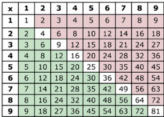
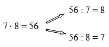
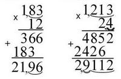
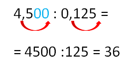
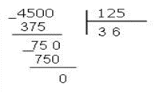
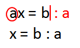

Таблица умножения

72 = 9 • 8 = 8 • 9
36 = 6 • 6 = 4 • 9 = 9 • 4
24 = 4 • 6 = 6 • 4 = 3 • 8 =8 • 3
Составь аналогичные цепочки
Умножение десятичных дробей
Алгоритм действия:- Умножаем, не обращая внимания на запятые.
- Отделяем запятой справа столько знаков, сколько в обоих сомножителях вместе.

Деление десятичных дробей
Деление десятичной дроби на натуральное число
Алгоритм действия:- Выполняем деление целой части
- Ставим запятую
- Выполняем деление дробной части
32, 24 : 8 = 4,03
(32:8=4 Целая часть закончилась – ставим запятую. 2на 8 не делится. Ставим 0. 24:8=3 Ответ: 4,03)
0,81 : 9 = 0,09
(0 на 9 не делится. Ставим в ответе 0. Целая часть закончилась – ставим запятую. 8 на 9 не делится. Ставим в ответе 0. 81:9=9 Ответ: 0,09)
0,3 : 6 = 0,30 : 6 = 0,05
т.к. 0,3 = 0,300…(к десятичной дроби можно приписать справа сколько угодно нулей)
Кончилась целая часть - ставь запятую!
Деление на десятичную дробь
Делимое : делитель = частное
Алгоритм действия:- В делимом и в делителе перенести запятую вправо на столько цифр, сколько их в делителе.
- Выполнить деление на натуральное число. ( Смотри Деление десятичной дроби на натуральное число)
4,5 : 0,125

Правила умножения и деления отрицательных чисел
- При умножении и делении 2-х чисел с разными знаками получаем число отрицательное.
- 2,5 • 0,4 = - 1
0,75 : (- 5) = - 0,15
- При умножении и делении 2-х отрицательных чисел получаем число положительное.
- 2,5 • (- 0,4) = 1
- 0,75 : ( - 5) = 0,15
Впервые правила знаков при умножении отрицательных и положительных чисел сформулировали индийские ученые.
Объяснить, почему при умножении отрицательного числа на положительное получается отрицательное число, несложно.
Для этого достаточно только заменить умножение сложением, например,
(-7)• 3=-7+(-7)+(-7)=-21.
А вот объяснения правил умножения отрицательных чисел даже самые крупные математики 18-ого века давали на редкость туманные. Английский поэт У.Г. Оден с огорчением воскликнул:
«Минус на минус – всегда только плюс.
Отчего так бывает, сказать не берусь».
В современной математике равенства
а(-b)=- аb и (-а)(-b)=аb
принимают без всяких доказательств.
Решение уравнений
Простейшее уравнение ах = b
а – коэффициент при х
Делим на коэффициент!
- 0,06х = 3,6
х = 3,6 : 0,06 3,6 : 0,06 = 360 : 6 = 60
х = 60
Ответ: 60 - х • 12,5 = 1
12,5х = 1
х = 1 : 12,5 1 : 12,5=10 : 125=0,08
х = 0,08
Ответ: 0,08